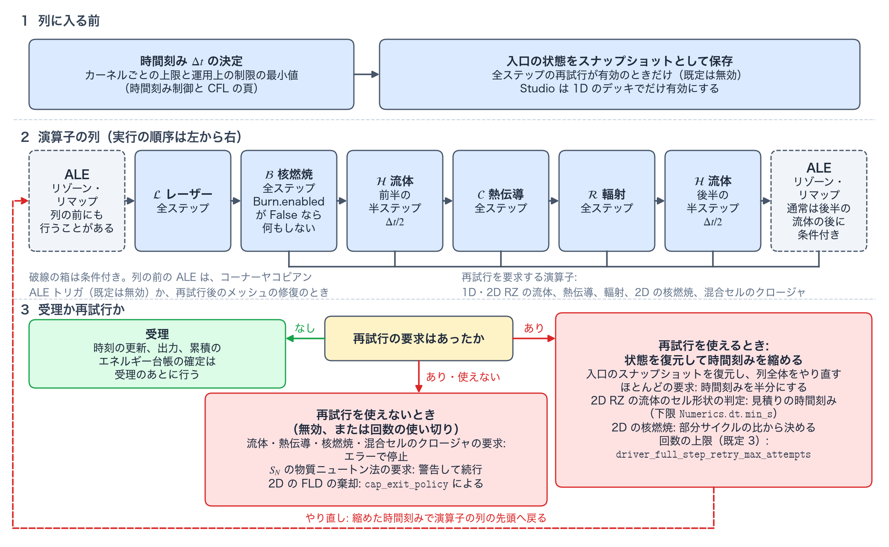

数値基盤 reference
このページは、個別の物理カーネルに属さない「全カーネルが共有する土台」をまとめる。固定した cgs + eV の単位系、支配方程式（governing equations）と、電子–イオン緩和（electron–ion relaxation）を含むクロージャ（closure）、状態量の配置（variable placement）と構成による保存（conservation by construction）の設計、低密度フィル領域（low-density fill region）の活性マスク（activity mask）、演算子分割（operator splitting）と再クロージャ（re-closure）の規律、床・クランプ・数値安全策（floor、clamp、numerical safeguards）、そしてエネルギー台帳（energy ledger）の恒等式である。時間刻みの決定則とカーネル別の CFL（Courant–Friedrichs–Lewy）条件は時間刻み制御と CFL の専用ページに分離した。このページに固有の用語は用語の節に一覧する。数式の正典はリポジトリの docs/NUMERICS.md（§0–§2、§10–§11）である。
この計算で使う用語
このページに固有の用語のうち、専用の節をもつものは、その節の冒頭で定義する。エネルギー台帳と人工項と保存誤差はエネルギー台帳と保存誤差、再クロージャは演算子分割と再クロージャの規律、活性マスクと低密度フィル領域は低密度フィル領域の活性マスク、床とクランプと数値安全策は床・クランプ・数値安全策にある。専用の節をもたない全ステップの再試行と受理（acceptance）は、次に定義する。
全ステップの再試行
全ステップの再試行（full-step retry）は、いずれかの演算子が再試行を要求したとき、外側のステップの入口の状態を復元し、時間刻みを縮めて、演算子の列全体をやり直す仕組みである。時間刻みを先に小さく選ぶだけでは、非線形なメッシュの許容性（admissibility）の破れをすべて予測することはできないので、この仕組みが要る。キーは Numerics.hydro.driver_full_step_retry_enabled で、既定は False である。True にすると、ドライバは演算子の列に入る前に状態をスナップショット（snapshot）として保存し、要求があれば、途中まで進んだレーザー、エネルギー、輻射、メッシュの状態を採用せずにスナップショットを復元する。Studio が書き出すデッキ（deck。TENRYU の入力となる 1 個の Python ファイル。定義）は、1D では True を書き、2D では書かない（既定の False のままである）。ALE の設定が許可された範囲にあるかを検査するプロファイル Numerics.profile.icf_standard_ale（enabled の既定は False）を有効にし、検査を強制する（enforce、既定は True）と、既定ではこのキーが True であることが要求され、満たさないデッキは入力の誤りになる。
再試行の回数の上限は Numerics.hydro.driver_full_step_retry_max_attempts（既定 3）で、1 回目の失敗のあとに許す再試行の回数である。時間刻みは、ほとんどの要求では半分にする。2D RZ（軸対称の (R, Z) 子午面）の流体がセルの形の判定で試行を棄却したときは、その判定を満たす見積りの時間刻み（下限は Numerics.dt.min_s）を使う。2D の核燃焼は、Burn.subcycle_max（既定 64）を、最も多くの部分サイクル（subcycling）を必要とするセルの必要数で割った比に \(0.9\Delta t\) を掛けた値を使う。再試行を要求する演算子は次のとおりである（全体の流れは図A）。
- 1D の流体: セルの体積が 0 以下になったとき（圧縮による節点の交差）と、Braginskii 粘性の陽的な安定条件の検査に落ちたとき。
- 2D RZ の流体: 修正子（corrector）が、許容できないセルの形の試行（コーナーヤコビアン（corner Jacobian）、ガウス点ヤコビアン（Gauss-point Jacobian）、RZ の体積、軸マージン（axis margin）、試行体積の下限）、陰的な人工粘性（artificial viscosity）の求解の失敗、混合セル（mixed cell。複数の材料を含むセル）の圧力緩和（pressure relaxation）の失敗を報告したとき。
- 熱伝導: STS（super time-stepping）の段数の合計が上限
Numerics.conduction.sts_total_stages_maxを超えたとき、または STS の安定限界の検査に落ちたとき。2D の陰的ソルバ（solver="dmp_implicit"）の線形求解が失敗したとき、ピカール反復（Picard iteration）が収束しないとき、結果の温度が最大値原理（maximum principle）の範囲に入らないとき。 - 輻射: SN（離散座標法、discrete ordinates）の物質ニュートン法が温度の床より上に根を見つけられないとき。2D の FLD（flux-limited diffusion、流束制限拡散）の段が、停滞、反復の上限到達、無効な値、許容できない負のエネルギーのいずれかで棄却されたとき。
- 核燃焼（2D）: あるセルの反応網が
Burn.subcycle_maxを超える部分サイクル数を必要とするとき。 - 混合セルのクロージャ（mixed-cell closure。材料ごとの保存を有効にした 2D）: 熱伝導・輻射・電子–イオン交換・ALE（arbitrary Lagrangian–Eulerian、任意ラグランジュ・オイラー法）のリマップのあとに、混合セルの圧力緩和が失敗したとき。
再試行を使えないとき（無効、または回数の使い切り）は、流体・熱伝導・核燃焼・混合セルのクロージャの要求がエラーで停止する。SN の物質ニュートン法の要求は、警告して局所的に補正した状態で続行する。2D の FLD の棄却は、Radiation.multigroup_diffusion.cap_exit_policy が "fail" なら停止し、"warn"（既定）なら警告して棄却した候補を採用する。
受理
受理（acceptance）は、全演算子が終わり、どの演算子も再試行を要求しなかったステップを、確定してよいステップとして認めることである。時刻の更新、出力、累積のエネルギー台帳の確定は受理のあとに置かれているため、失敗した試行の履歴やエネルギーを二重に数えることはない。
単位と記号
単位系をモジュールの境界で変換しないことが、全カーネルの数値の出発点である。とくに温度 \(T\) は eV であり、式の中で \(P=nk_BT\) と書くときの \(k_B\) は eV_to_erg = \(1.6022\times10^{-12}\) erg/eV を意味する。ケルビン用の \(1.3807\times10^{-16}\) erg/K と混同しないこと。輻射定数も同じ規約で \(a_{\rm eV}=1.3720\times10^{2}\) erg cm⁻³ eV⁻⁴ と表され、平衡輻射エネルギー密度は \(T\) を eV として \(a_{\rm eV}T^4\) になる。また、質量あたりの比熱 \(c_v\) [erg/(g·eV)] と、体積あたりの比熱 \(C_v=\rho c_v\) [erg/(cm³·eV)] も書き分ける。これらの定数と多義記号の一覧は記号・用語集にまとめている。
| 量・記号 | 内部の単位 / 意味 | 取り違えを防ぐ注意 |
|---|---|---|
| \(\rho,\mathbf u,t\) | g/cm³、cm/s、s | メッシュの幾何量も cm と cm³ を使う。 |
| \(T_i,T_e,\epsilon_g\) | eV | 温度と光子群の境界 \(\epsilon_g\) は同じエネルギーの軸上にある。 |
| \(E_g\) | erg/cm³ の群積分した輻射エネルギー密度 | eV の群境界 \(\epsilon_g\) と混同しないこと。添字が同じ g でも別の量である。 |
| \(e_i,e_e,P\) | erg/g、dyne/cm² | 比エネルギーと体積あたりのエネルギーを混同しないこと。 |
| \(\kappa_{P,g},\kappa_{R,g}\) | cm²/g の質量不透明度 | 表の値である。輸送へ直接渡してはいけない。 |
| \(\sigma_{a,g}=\rho\kappa_{P,g}\) | cm⁻¹ の長さあたりの不透明度 | \(\kappa\) と \(\sigma\) を取り違えると、吸収長が \(\rho\) 倍だけずれる。 |
| \(c_v,\ C_v\) | 質量あたりの比熱、体積あたりの比熱 | \(C_v=\rho c_v\)。記号を取り違えると係数が \(\rho\) 倍ずれる。 |
支配方程式とクロージャ
流体は、単一流体としてのラグランジュ的（Lagrangian）な物質運動と、2 温度の内部エネルギーを解く（Main.temperature_model="2T"。"1T" ではイオンと電子を 1 つの温度で扱い、既定の "auto" は、初期状態に \(T_e\ne T_i\) のセルがあれば 2T、なければ 1T にする）。物質微分（material derivative）\(D/Dt\) を使うと、質量保存と運動量の式は
ここで \(Q\) は人工粘性による圧力、\(\mathbf f_{\mathrm{geom}}\) は座標系に由来する幾何項である。輻射圧（radiation pressure）\(P_r=\tfrac13\sum_gE_g\)（\(E_g\) は群ごとの輻射エネルギー密度）による力は、1D の FLD で Radiation.multigroup_diffusion.hydro_coupling="gamma_r_43"（既定）のときだけ \(-\nabla P_r\) として運動量の式に加わり、その仕事は輻射場のエネルギーから支払われる。2D RZ と SN では、輻射圧の力を運動量の式に含めない。イオンと電子の比内部エネルギーの式は
\(\mathbf q_e\) は電子の熱流束（heat flux）、\(S_L\) はレーザーの吸収、\(S_r\) は輻射との交換である。\(S_i\)・\(S_e\) はそれ以外の追加源であり、v1.0 では 0 に固定されたプレースホルダである（核燃焼は独立の演算子段として、ホット電子（hot electron）はレーザーの源経路を通じて、それぞれ直接沈着する）。符号の規約として、\(Q_{ei}>0\) は電子からイオンへのエネルギーの移動、すなわちイオンの加熱を表す。同じ \(Q_{ei}\) が両方の式に符号を変えて現れるため、セル内の交換だけでは物質の全エネルギーは変わらない。
電子–イオン緩和 \(Q_{ei}\)
2 温度モデルの要となる交換項は、Spitzer–Braginskii の衝突緩和で閉じる。
$$ Q_{ei}=\frac{C_{v,e}\,(T_e-T_i)}{\tau_{eq}}\ \ [\mathrm{erg/cm^3/s}], \qquad \tau_{eq}=\frac{A\,m_p}{2\,m_e}\,\tau_e, $$ $$ \tau_e=\frac{3.44\times10^{5}\;T_e[\mathrm{eV}]^{3/2}} {n_e[\mathrm{cm^{-3}}]\;\bar Z\;\ln\Lambda_{ei}}\ \ [\mathrm s], \qquad \tau_{eq}=\frac{3.16\times10^{8}\;A\;T_e[\mathrm{eV}]^{3/2}} {\bar Z^{2}\;n_i[\mathrm{cm^{-3}}]\;\ln\Lambda_{ei}}\ \ [\mathrm s]. $$ここで \(C_{v,e}\) は電子の体積あたりの比熱、\(A\) はイオンの質量数、\(\bar Z\) は平均電離度（mean ionization）、\(n_e\) と \(n_i\) は電子とイオンの数密度、\(\ln\Lambda_{ei}\) は電子–イオン衝突のクーロン対数（Coulomb logarithm。下限は 2）、\(m_p\) と \(m_e\) は陽子と電子の質量である。この項は、温度差 \(T_e-T_i\) を電子の熱容量で重み付けし、平衡化時間（equilibration time）\(\tau_{eq}\) で緩和させる。1 回の衝突で移るエネルギーの割合は質量比 \(m_e/m_i\) 程度に抑えられるため、\(\tau_{eq}\) は電子衝突時間（electron collision time）\(\tau_e\) の \(Am_p/(2m_e)\) 倍になる。右の式はこの関係を cgs + eV の数値係数で書いたものである。\(T_e^{3/2}\) 依存のため高温プラズマほど緩和は遅く、コロナでは電子とイオンの温度が長く分離する。この式は慣性核融合（inertial confinement fusion、ICF）の典型条件 \(T_e\gg(m_e/m_i)T_i\) での近似であり、\(T_e>T_i\) のとき \(Q_{ei}>0\)（イオン加熱）となって符号規約と整合する。適用位置は流体の各半ステップの修正子内で、後続の熱伝導は \(Q_{ei}\) 適用済みの \(T_e\) を初期値として受け取る。
発散の離散化とセル質量
ラグランジュ離散化では、これらの式に現れる発散 \(\nabla\!\cdot\mathbf u\) を独立に差分せず、セル体積の変化率として評価する：\((\nabla\!\cdot\mathbf u)_c=\dot V_c/V_c\)。1D 球対称では \(\dot V_i=A_{j+1}u_{j+1}-A_ju_j\)（\(A_j\) は節点 \(j\) の殻境界の面積で、セル \(i\) は節点 \(j=i\) と \(j+1\) のあいだにある）である。連続の式はこの恒等式のセル版そのものであり、セル質量 \(\Delta M_c=\rho_cV_c\) は構成上一定に保たれる。
輻射の輸送方程式
群 \(g\) の輻射強度（specific intensity）\(I_g(\mathbf r,\mathbf\Omega,t)\) に対する連続の輸送方程式（transport equation）は
$$ \frac{1}{c}\frac{\partial I_g}{\partial t} +\mathbf\Omega\!\cdot\nabla I_g =\sigma_{a,g}B_g(T_e)-\sigma_{t,g}I_g+\mathcal S_{\mathrm{sca}}, $$ここで \(B_g(T_e)\) は群のプランク関数（Planck function）、\(\sigma_{t,g}=\sigma_{a,g}+\sigma_{s,g}\) は全消衰係数（total extinction coefficient）、\(\mathcal S_{\mathrm{sca}}\) は散乱源（scattering source。後述）である。電子との交換項は次のとおりである。
$$ S_r=\sum_g c\,\sigma_{a,g} \left[E_g-a_{\rm eV}T_e^4 b_g(T_e)\right]. $$\(b_g(T_e)\) はプランクスペクトルの群ごとの分率で、全群の和が 1 になるよう規格化する。\(S_r>0\) は輻射場から電子への正味の加熱を表す。物理的な散乱 \(\sigma_{s,g}=\rho\kappa_s\)（opacity.kappa_s は全群で共通の定数）をもつのは、1D の SN だけである。FLD は散乱をもたず、kappa_s が正の材料があると入力の誤りになる。2D の SN は \(\sigma_{s,g}=0\) とする。FLD ページの Fleck 実効散乱（Fleck effective scattering）\((1-f)\sigma_a\) は、輻射と物質の結合を陰的に扱うために現れる項であり、物理散乱ではない。
状態量の配置と「構成による保存」
状態量の置き場所は全カーネル共通である。熱力学量 — 密度、イオン・電子の比内部エネルギー、温度、圧力、人工粘性圧、材料の体積分率 — はセル中心に、運動学量 — 位置と速度 — は節点にもつ。1D の節点はセル境界（球・円筒形状では殻、平面形状では平面）、2D RZ の節点は四辺形の頂点である。時間発展の一次変数は保存量（質量・運動量・エネルギー）で、温度や圧力はそこから状態方程式（equation of state、EOS）で再構成する派生量（derived quantity）である。HDF5（Hierarchical Data Format 5）出力の mesh/・hydro/ のデータセット名は、この内部 State のフィールド名と 1:1 に対応する（出力と解析）。
保存の方針は「事後に補正する」ではなく「構成上壊れない形に書く」である。どこで何がそれを保証しているかは次の表のとおりで、詳細は各カーネルページにある。
| 保存量 | 構成上の機構 | 詳細 |
|---|---|---|
| 質量 | 純ラグランジュ運動ではセル質量 \(\Delta M_c\) が定義により不変。密度は \(\rho=\Delta M/V\) の再構成でしか変わらない。 | 本ページ上記 |
| 運動量・全エネルギー（流体） | コーナー力と \(p\,dV\) 仕事を、同じ幾何ベクトル \(\mathbf S_{c,k}=\partial V_c/\partial\mathbf x_{c,k}\)（セル \(c\) の体積をコーナー \(k\) の位置で微分したもの）から作るエネルギー整合な構成で、運動量の式と内部エネルギーの式が互いに随伴（adjoint）の関係になる。 | ラグランジュ流体 |
| リマップ（ALE） | 示強量（intensive quantity）ではなくセル積分量（cell-integrated quantity。示量量に当たる）を、面ごとに 1 回だけ評価した流束の符号反転適用で転写する。 | ALE |
| 輻射 ⇄ 物質 | 実際に適用した源 \(S^{used}\)（輻射の方程式に実際に入れた、セル・群ごとの 1 ステップ分の放出エネルギー [erg]）を、ステップのあいだ値を変えずに物質側の収支に使い、共有面の寄与は厳密に相殺する。 | FLD・SN |
| レーザー | 呼び出しごとに「入射 = 吸収 + 未吸収」を厳密に閉じる。光線がどう終わったか（臨界面での終了、光線追跡（ray tracing）のメッシュの外での終了など）の分類が、残りの帰属先を決める。 | レーザー |
| 熱伝導・粘性・燃焼 | 面流束の符号反転適用（伝導・粘性）と、解放 = 沈着 + 逸出（escape）+ 飛行中という収支（燃焼）。 | 各カーネルページ |
それでも残る破れ — 床補正、丸め、アルゴリズム限界 — は隠さず、後述のエネルギー台帳で毎ステップ定量化する。
低密度フィル領域の活性マスク（hydro_active）
活性マスク（activity mask）は、セルごとの流体の活性フラグ hydro_active（1 が活性、0 が非活性）の並びである（リポジトリの docs/NUMERICS.md §2.1.1「Hydro開始温度条件」）。非活性セルは、圧力と人工粘性の力を出さず、PdV 仕事を受けない。真空の代替として置く低密度フィル領域を通常の物質として動かすと、無意味な音波と極端な CFL 制限が生まれるので、活性マスクでこの領域を静かに保つ。セルの電子温度 \(T_e\) が起動しきい値 Numerics.hydro.T_start_eV（既定 0.0 eV）に達すると、非活性セルは活性になる。しきい値が 0 のときは温度による非活性化は行われず、別の規則で除かれるセル（ボイド（void）セルなど）を除く全セルが活性である。Studio の既定も 0.0 eV である。一度活性になったセルは、温度が下がっても非活性へ戻らない（別の規則で除かれるセルを除く）。
非活性セルの扱いは Numerics.hydro.T_start_inactive_cells が決める。既定の "passive_fill" では、節点は隣接セルのいずれかが活性なら動く（OR 伝播）。活性なセルに隣接しない節点の扱いは次元で異なる。2D RZ では位置と速度を固定する。1D では、活性な節点より外側に続く非活性な節点が、内側で最も近い活性な節点の変位と速度をそのまま写して動き、フィル領域がプラズマの端に追従する（内側に活性な節点がなければ固定される）。非活性セルの密度も毎ステップ \(\rho=\Delta M/V\) で現在の体積から求め直され、比内部エネルギーは流体の仕事で変わらない。したがって、温度が起動しきい値に達して活性化した時点の状態は現在の体積と整合しており、活性化直後の PdV 仕事は不連続にならない。"rigid_wall"（1D のみ）では、節点が両側のセルの活性のときだけ動き、非活性セルは剛体壁として体積を保ち、電子–イオン緩和もマスクしない。"cold_equilibrium"（1D、2 温度、表形式の EOS のみ）では、流体のマスクを行わない。Studio は "passive_fill" 以外のときだけこのキーを書き出す。CFL の min は活性セルだけを対象とし、全セル非活性なら流体は時間刻みの制約から外れる（時間刻み制御）。
使用制約（重要）。既定の passive_fill では、このフラグは低密度フィル領域（\(\rho\ll\rho_{shell}\)）を静的に保持するための数値マスクであり、高密度物質の運動を温度条件で抑制する目的に使ってはならない。非活性セルは「動かされるが押し返さない」片務的な力学状態になるため、高密度物質に適用するとエネルギー・運動量の非物理的な注入・消失を引き起こす。なお、熱伝導・輻射・レーザーとの結合からボイドセルを除く仕組みは、これとは別である（Material.is_void の材料のセルを cell_is_void のマスクで除く。EOS・不透明度・電離）。
演算子分割と再クロージャの規律
演算子分割（operator splitting）は、外側の 1 ステップを物理ごとの演算子に分け、順に適用する時間積分の方法である。分割で最も事故が起きやすいのは、前の演算子が変えた状態を、次の演算子が古いクロージャで読むことである。クロージャは、保存量から温度・圧力・比熱を決める関係で、TENRYU では EOS が与える。再クロージャ（re-closure）は、演算子が状態を変えたあとに、\((\rho,e)\) から EOS で温度 \(T\)、圧力 \(P\)、比熱 \(c_v\)（体積あたりの比熱は \(C_v=\rho c_v\)）を求め直すことである。熱伝導のように \(T_e\) を直接更新する演算子のあとは、\(T_e\) から \(e_e\)、\(P_e\)、\(C_v\) を求め直す。
外側の 1 ステップは次の写像で表される。合成は右から左へ作用するため、実行の順序は \(\mathcal L\)、\(\mathcal B\)、\(\mathcal H/2\)、\(\mathcal C\)、\(\mathcal R\)、\(\mathcal H/2\) である。
$$ \mathcal U^{n+1}= \mathcal H_{\Delta t/2}\circ \mathcal R_{\Delta t}\circ \mathcal C_{\Delta t}\circ \mathcal H_{\Delta t/2}\circ \mathcal B_{\Delta t}\circ \mathcal L_{\Delta t}(\mathcal U^n). $$\(\mathcal H\) はラグランジュ流体と境界条件（各半ステップの修正子は \(Q_{ei}\) を含む）、\(\mathcal C\) は電子熱伝導、\(\mathcal L\) は光線追跡と沈着、\(\mathcal B\) は核燃焼（Burn.enabled が既定の False のときは何もしない）、\(\mathcal R\) は輻射輸送と物質との交換である。2D RZ の ALE によるリゾーン（rezone）とリマップは、通常は 2 回目の流体の半ステップのあとに条件付きで行う。コーナーヤコビアン ALE トリガ（corner-Jacobian ALE trigger。Numerics.hydro.corner_jacobian_ale_trigger_enabled、既定は False）が働くとき、および再試行のあとにメッシュを修復するときは、演算子の列に入る前にも ALE を実行することがある。列に入る前の候補 \(\Delta t\) の決定は時間刻み制御と CFL にまとめた。
TENRYU は、各演算子が \(T_e\) または \(e_e\) を変えたあとに再クロージャを行い、後続の演算子が古いままの \(T\)、\(e\)、\(P\)、\(C_v\) を読まないようにする。MPI（Message Passing Interface）実行では、所有領域を書いた直後で、最初にゴースト領域（ghost region。隣のランクの境界セルの写しを持つ領域）を読む処理より前に、ゴースト領域を交換する（MPI 分割）。動的な平均電離度も各演算子の入口で評価し直される（EOS ページ）。
ストラング型分割（Strang-type splitting）という呼び方には、精度の面で限定が付く。流体は熱伝導と輻射のまとまりを半ステップで挟むため、その組合せに対しては対称である。一方でレーザーと核燃焼は、ステップの先頭に全ステップで 1 回ずつ適用し、熱伝導と輻射も互いに全ステップの順で適用する。したがって、レーザー・核燃焼とそれ以外の連成、および熱伝導と輻射の連成は、演算子を単純に順番へ並べるリー分割（Lie splitting）と同じ 1 次精度にとどまり、5 つの演算子の列全体も一般には 2 次精度にならない。
この 1 次の結合を許容するのは、レーザーと他の演算子のあいだ、および熱伝導と輻射のあいだの分割誤差が、ICF の実行では支配的な誤差要因にならないためである — 各演算子が 1 ステップで進める物理量は互いに異なり、実用上の精度は時間刻みの制御が確保する。完全な 2 次精度が必要になった場合の多段分割 \(\mathcal H_{/2}\circ\mathcal C_{/2}\circ\mathcal L_{/2}\circ\mathcal R\circ\mathcal L_{/2}\circ\mathcal C_{/2}\circ\mathcal H_{/2}\) は、将来のオプションとしてリポジトリの docs/NUMERICS.md §2.1 に記録されている。
全演算子が終わっても、いずれかの演算子が再試行を要求したステップは受理されず、入口の状態からやり直す。再試行の条件、時間刻みの縮め方、再試行を要求する演算子は、用語の節で定義した。全体の流れは図Aに示す。

src/coupling/driver.cpp の呼び出しの順、既定値は src/core/config.hpp から確かめている。床・クランプ・数値安全策
床（floor）は、状態量が下回ってはならない下限値である。クランプ（clamp）は、下限または上限を越えた量を、限界の値へ戻す操作である。どちらも物理モデルではなく、NaN や負温度で計算全体が崩壊する事故を防ぐ数値安全策（numerical safeguards）である。設計の方針は、状態を直したら回数を数え、エネルギーを引き上げたらエネルギー台帳に記帳することである。例外は不透明度テーブルの範囲外の参照で、デバイス側では黙って処理し、回数を数えない（下記）。
- 温度の床: \(T_e\ge T_{e,floor}\)、\(T_i\ge T_{i,floor}\)（
Numerics.floorsのTe_floor_eV/Ti_floor_eV。既定はいずれも \(10^{-3}\) eV で、Studio も同じ値を書き出す）。表形式の EOS を使うデッキで床を指定しないと、表の最低温度が \(10^{-3}\) eV より高い場合に、床はその温度へ引き上げられる。指定した床が表の最低温度を下回ると入力の誤りになる（低温平衡の枝T_start_inactive_cells="cold_equilibrium"を使うときを除く）。1D の既定のクロージャ（Numerics.hydro.eos_closure_mode="energy_authoritative"）は、床を温度にだけ適用する。比内部エネルギーは、次の項の下限処理を除いて書き換えないので、温度の床そのものはエネルギーを注入しない。 - 密度の床: セルの密度 \(\rho=\Delta M/V\) が
Numerics.floors.rho_floor_gcc（既定 \(10^{-10}\) g/cm³、Studio も同じ値）を下回るときは、密度の値をその床へ引き上げる。セル質量は変えないので、引き上げたセルの \(\rho\) は \(\Delta M/V\) と異なり、エネルギーは注入されない。引き上げの回数は、ボイドセルを除いてクランプ回数に数える。 - 比内部エネルギーの下限: 流体の更新は、理想気体のセルの比内部エネルギーが負になったとき 0 へ切り上げ、切り上げた分を床補正 \(E_{floor}\) に記帳する。表 EOS の負のエネルギーは有効な値なので切り上げない。伝導の床による制限、レーザー・輻射・核燃焼の注入のあとの下限処理、ALE のリマップの床も、同じく \(E_{floor}\) に記帳する。
- クランプ回数の監視:
clamp_countはステップ開始時に 0 へ戻し、各演算子のクランプごとに加算する。1 ステップあたりNumerics.safety.clamp_warn_threshold（既定 100）を超えると警告し、clamp_fatal_threshold（既定 10000）を超えると致命的エラーで停止する。時系列は履歴のsafety/clamp_countに残る。 - 不透明度テーブルの範囲外: 参照する経路によって扱いが異なる。多材料セルの LTE（local thermodynamic equilibrium、局所熱力学平衡）の表の参照は、\((\rho,T)\) を表の定義域へクランプしてから補間する。単一材料の表不透明度を使う非 LTE（non-LTE）の係数の計算は、表の最高温度より高い側と、表の最小イオン密度より低い側で、\(\log\kappa\) を表の端の勾配で外挿する。どちらもデバイス側では黙って処理し、件数を数えない。警告を出すのは、ホスト側の IONMIX の読み取りがクランプしたときだけで、プロセスあたり 10 件で打ち切る。
- エネルギー収支と非有限値の監視: \(\varepsilon_{budget}\) が
Diagnostics.energy_budget.warn_threshold（既定 \(10^{-3}\)）を超えると警告する（最初のステップは検査しない）。Numerics.safety.energy_fatal（既定は False）を True にすると、\(\varepsilon_{budget}\) がNumerics.safety.energy_budget_tol（既定 \(10^{-3}\)）を超えた時点で致命的エラーにする。人工項の相対寄与 \(E_{floor}/E_{denom}\)、\(E_{safety}/E_{denom}\)、\(E_{redist}/E_{denom}\)（各項と \(E_{denom}\) はエネルギー台帳の節で定義する）が \(10^{-3}\) を超えたときも警告する。温度・密度・比内部エネルギーに NaN や無限大が現れると、演算子ごとの検査が致命的エラーで停止する（Numerics.safety.nan_fatal、既定は True）。 - 各カーネル固有の安全策: レーザーの屈折率の下限 \(\varepsilon_n\) とクーロン対数の下限 2、伝導でボイドセルを除くマスクと床保護スロットル（floor-protection throttle。温度が床を割るおそれのあるセルの流出流束を、面の両側に共通の係数で絞る処理）、EOS の非正の \(c_v\) のクランプなどは、それぞれのカーネルページに記載がある。共通する方針は、発動したら警告し、可能なら注入量を記帳することである。
エネルギー台帳と保存誤差 \(\varepsilon_{budget}\)
エネルギー台帳（energy ledger）は、系の全エネルギーの変化を、その原因である出入りと補正の項ごとに、ステップごとに積算した記録である。保存は構成で守る（状態量の配置と構成による保存）が、丸め、床、アルゴリズムの限界による破れは残る。エネルギー台帳は、全エネルギーの変化が各項の和に一致するかを毎ステップ検査し、一致しない分を保存誤差 \(\varepsilon_{budget}\) として測るために要る。項は、レーザーの入射や輻射の境界流出のような物理的な出入りと、床補正のように数値的な操作が状態へ加えた人工項に分かれる。人工項を物理的な出入りから分けて積算するので、数値安全策が結果を支配していないかを別に調べられる。
エネルギー台帳の各項は、次の恒等式で結ばれる。
$$ \Delta E_{total}=\Delta E_{int,e}+\Delta E_{int,i}+\Delta E_{kin}+\Delta E_{rad} $$ $$ =E_{source}-E_{sink}+E_{supply}+E_{rad,mesh\_adv}+E_{artificial}. $$左辺は電子・イオン内部、運動、輻射場の各エネルギー変化の和である。右辺の各項は次のとおりである。
- 流入: \(E_{source}=E_{laser,in}+E_{Marshak,in}+E_{volume,in}+E_{burn,in}+\max(E_{solver},0)\)。\(E_{laser,in}\) はレーザーの入射エネルギー、\(E_{Marshak,in}\) は Marshak 境界（Marshak boundary）から入る輻射のエネルギー、\(E_{volume,in}\) は輻射の体積線源
Radiation.volume_source_rateが注入したエネルギー、\(E_{burn,in}\) は核燃焼が物質へ沈着したエネルギー（荷電粒子の沈着と、Burn.neutron_heatingが有効なときの中性子の最初の衝突による加熱）である。 - 流出: \(E_{sink}=E_{laser,esc}+E_{CBET,IAW}+E_{rad,esc}+E_{num.loss}+E_{pdV}^{bdry}+\max(-E_{solver},0)\)。\(E_{laser,esc}\) は物質に沈着しなかったレーザーのエネルギー（臨界面で終了した光線と、光線追跡のメッシュの外で終了した光線の未吸収分、および領域から逸出したホット電子のエネルギー）、\(E_{CBET,IAW}\) はCBET（cross-beam energy transfer、交差ビームエネルギー転送）が光から取り除いてイオン音波（ion-acoustic wave）へ渡したエネルギー（CBET が有効なときだけ 0 でない）、\(E_{rad,esc}\) は輻射が境界から出ていったエネルギー、\(E_{pdV}^{bdry}\) は境界の圧力が外へした PdV 仕事（膨張で正）である。
- 数値的喪失: \(E_{num.loss}\)（numerical loss）は、アルゴリズム上の限界のために物質へ入れられなかった、または系から落ちたエネルギーで、既知の流出として物理的な出入りの側で数える。たとえば、SNB（Schurtz–Nicolaï–Busquet）が電子温度を伝導の適用前の大域最大値で頭打ちにしたときに除いた分と、注入先のセルが見つからない、または質量 \(\rho V\) が \(10^{-30}\) g 未満で注入できなかったレーザー・核燃焼のエネルギーがある。
- 状態供給: \(E_{supply}\) は、2D RZ の状態供給（state supply）の面が出し入れしたエネルギーである。状態供給は、
Numerics.hydro.boundary_2dのz_bottom・z_topにtype="state_supply"で指定する z 面で、面に接するセルの密度・温度・z 方向の速度を指定した値に保つ境界である。\(E_{supply}\) は、その上書きと速度の復元とリマップの境界流束として記帳した変化と、面を通る流れの仕事の和で、領域へ入る向きを正とする。状態供給の面がなければ 0 である。 - メッシュの動きによる輻射場エネルギーの変化: \(E_{rad,mesh\_adv}\) は、流体の各半ステップのあいだに輻射場の全エネルギー \(\sum_{c,g}E_{g,c}V_c\)（\(E_{g,c}\) は群 \(g\)、セル \(c\) の輻射エネルギー密度、\(V_c\) はセル体積）が変わった量の和である。輻射のエネルギー密度が体積変化に追従しない設定（
Radiation.multigroup_diffusion.hydro_coupling="none"）では、体積変化がそのまま輻射エネルギーの増減になる。この項は物理的な境界流束ではないので、保存誤差の計算で全エネルギー変化から差し引く。 - 人工項: \(E_{artificial}=E_{floor}+\max(E_{safety}-E_{floor},0)+E_{redist}\)。人工項は、物理的な出入りではなく、数値的な操作が状態へ加えたエネルギーである。\(E_{floor}\)（床補正）は、各演算子がエネルギーそのものを引き上げた量の和である（床・クランプ・数値安全策）。\(E_{safety}\)（安全補正）は伝導の安全補正の記帳欄だが、現在の実装は伝導の補正を \(E_{floor}\) に含めて記帳し、\(E_{safety}\) に \(E_{floor}\) と同じ値を入れるので、\(\max(E_{safety}-E_{floor},0)\) は 0 である。\(E_{redist}\)（ALE 再分配の未解決分）は、2D RZ の ALE のリマップが、質量の床に落ちたセルを床の状態に置いたときのエネルギー差と、運動エネルギーのクロージャ（kinetic-energy closure）の再配分（
Numerics.ale.ke_closure_redistribute_floor、既定は False）が吸収しきれなかった不足の和で、ALE を使わなければ 0 である。 - 陰的ソルバの残差: \(E_{solver}\) は、記帳の欄だけがあり、どの演算子も加算しないので常に 0 である。符号に応じて流入または流出へ数える。
保存誤差は、人工項と、メッシュの動きによる輻射場エネルギーの変化を除いた全エネルギー変化と、物理的な出入りとの差を、ステップ開始時のエネルギーの大きさと流入の大きさのうち大きい方（下限つき）で規格化した量である。
$$ \begin{aligned} \varepsilon_{budget}&=\frac{\bigl|(\Delta E_{total}-E_{artificial}-E_{rad,mesh\_adv})-(E_{source}-E_{sink}+E_{supply})\bigr|}{E_{denom}},\\ E_{denom}&=\max\bigl(|E_{int,e}^{\,n}|+|E_{int,i}^{\,n}|+|E_{kin}^{\,n}|+|E_{rad}^{\,n}|,\,E_{source},\,10^{-20}\ \mathrm{erg}\bigr) \end{aligned} $$ここで \(E^{\,n}\) は、そのステップの開始時の値である。\(\varepsilon_{budget}\) は物理的な保存の破れを測り、人工項の寄与（\(E_{floor}/E_{denom}\) など）は独立に監視して、数値安全策が結果を支配していないかを別途検出する。分母の \(10^{-20}\) erg の下限は、コールドスタート（全エネルギー ≈ 0）での 0 除算と偽の致命的エラーを防ぐ。
多くの項は履歴の energy/ 群に現れる — laser_incident・laser_escaped・marshak_in・E_volume_in・E_cbet_iaw・radiation_escaped・pdv_boundary・numerical_loss・floor_injected・safety_injected・redistribution_unresolved・solver_residual、状態供給の面があるときは state_supply・supply_flow_work、そして \(\varepsilon_{budget}\) の conservation_error である（チャネルの一覧は出力と解析）。\(E_{burn,in}\) の累積は burn/ 群の E_dep_e_cum と E_dep_i_cum の和に等しく、\(E_{rad,mesh\_adv}\) は出力しない。読み方の指針: \(\varepsilon_{budget}\) が跳ねたらまず人工項の比率を見る。人工項が支配的なら床・クランプの発動源（どの演算子か、clamp_count の推移）を、そうでなければ境界と源の帰属（吸収率・逸出）を疑う。
全カーネルに共通する保証と要求
個々のページに散らばる、全カーネルに共通する保証と要求を一覧する。いずれもコードベースが守る仕様であり、変更は検証の検査（検証の哲学）に通らなければならない。
| 項目 | 内容 | 詳細 |
|---|---|---|
| 単位系の固定 | 内部は cgs + eV に固定。モジュール境界での単位変換はしない。 | 本ページ |
| 実行時 Python 禁止 | namelist の Python 関数は、初期化時に表にして設定を凍結（freeze。定義）するので、時間ループでは呼ばれない。 | 実行・アーキテクチャ |
| 厳格な入力検証 | 未知キー・型違い・不正な組合せは警告ではなくエラー。既定値は仕様書が正典。 | namelist |
| 決定論 | 決定論的（deterministic）な 1D 経路は、同じバイナリ・入力・GPU 構成の反復実行で、ビット単位（bitwise）で一致する。2D RZ も、1 ステップ内の浮動小数点の和を固定順にしており、順序に依存する atomicAdd は状態・時間刻み・エネルギー台帳・診断の和に残っていない。このため同じ構成の 2 本の実行は、状態、時間刻み、エネルギー台帳、診断のすべてがビット単位で一致しなければならない。反復実行の差が 0 でない経路だけは、雑音帯（noise band。反復実行どうしの差から決めた許容の帯）で判定する（再現性の検査）。 | 検証の哲学 |
| エネルギー台帳 | 境界と源のやり取りはエネルギー台帳で閉じ、人工項は別に記帳する。 | 本ページ・各カーネル |
| 時間刻み | 大域 \(\Delta t\) は各カーネルが提案する上限の最小値である。\(\Delta t\) が Numerics.dt.min_s（既定 \(10^{-20}\) s、Studio の既定は \(10^{-22}\) s）を下回った状態が Numerics.dt.min_consecutive_steps（既定 1）回続くと、致命的エラーになる。 | 時間刻み制御 |
| 出力スキーマ | データセット名は State と 1:1、全数値に units 属性、schema_version で互換管理。 | 出力と解析 |